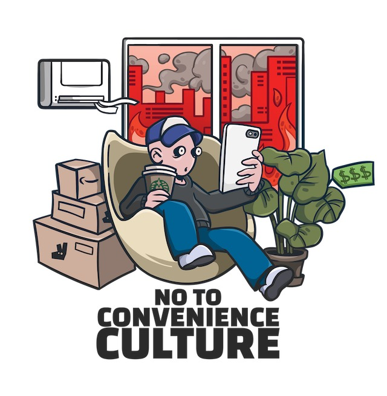

On the one hand you have — the point you’re making Woz — is that information sort of wants to be expensive because it is so valuable — the right information in the right place just changes your life. On the other hand, information almost wants to be free because the costs of getting it out is getting lower and lower all of the time. So you have these two things fighting against each other.
Convenience culture is a culture that elevates personal convenience above all other values. Convenience is about making life efficient, effortless, and inexpensive, but most of the time these promises come at a cost. I'm not against convenience, but I grew more skeptical of convenience when it's considered a value above others like beauty, sustainability, and community. Convenience has been offered as a service and enabled by the current technology ecosystem without ever considering the externalities.
It's too simple to press a button on a smartphone and get almost everything, from getting a dog walker to get laundry done, to hiring a car, to get groceries at your doorstep, renting a piece of art the gets delivered at your home, find the nearest private swimming pool, or to being able to buy almost anything.
These services seem great and useful (some of them feel, at least for me, decadent and ridiculous), but of course they come at a cost. The way they work and the economic models are explained extensively in different books and I don't need to go in detail here, but the summary is that these services try to commoditize a luxury, making people addicted to it; most of these services use investor money to eliminate competition and take a dominant position.
Earth > Humanity > Technology
This above should be the compass to guide us into our world of technological advances, asking first if what we are doing hurts the earth, than if it hurts humanity. This should re-orient technologist into the
- Use of tech in not other way but convenience
- Texture of society is suffering (no local community)
- Justify closed computing because your life is running on it (trusted computing)
- Creating a society on two levels (gig economy workers, new poverty)
- Wellbeing (convenience doesn't create fit people)
- We build technology and technology shapes us we don't realize that just building the technology is enough to change behavior, and the market force behind investor backed startups are not just neutral, but loaded, they push the values that they stand for, and society changes because of it, not for the better. We need to create
without thinking about the bad consequences that those services can have in society. There is more to this story, some attribute the problems of convenience exclusively to the technology industry; for instance, this is a quote from an article:
The lack of value placed on interpersonal communication amongst peers, the increase in societal vanity, and the decrease in the majority's attention spans are but a few examples of technology having a negative impact on us without care being given.
- from https://www.theodysseyonline.com/technological-convenience
Given these reflections, I believe we made a sticker that says: No to Convenience Culture.
It might sound heavy, but let's provoke and joke, with a sticker!
I have a first idea of the sticker, but feel free to propose something else if you feel you have an idea. My idea for the sticker is: There is a person sitting on an armchair holding a giant oversized smartphone, with eyes stretched out towards the phone. In the room surrounding the person, there is convenience culture junk like amazon boxes or uber eats food/beverage. The room has air-conditioning and outside the room, the world is burning. Below the illustration, there is the text: No to Convenience Culture. What do you think?